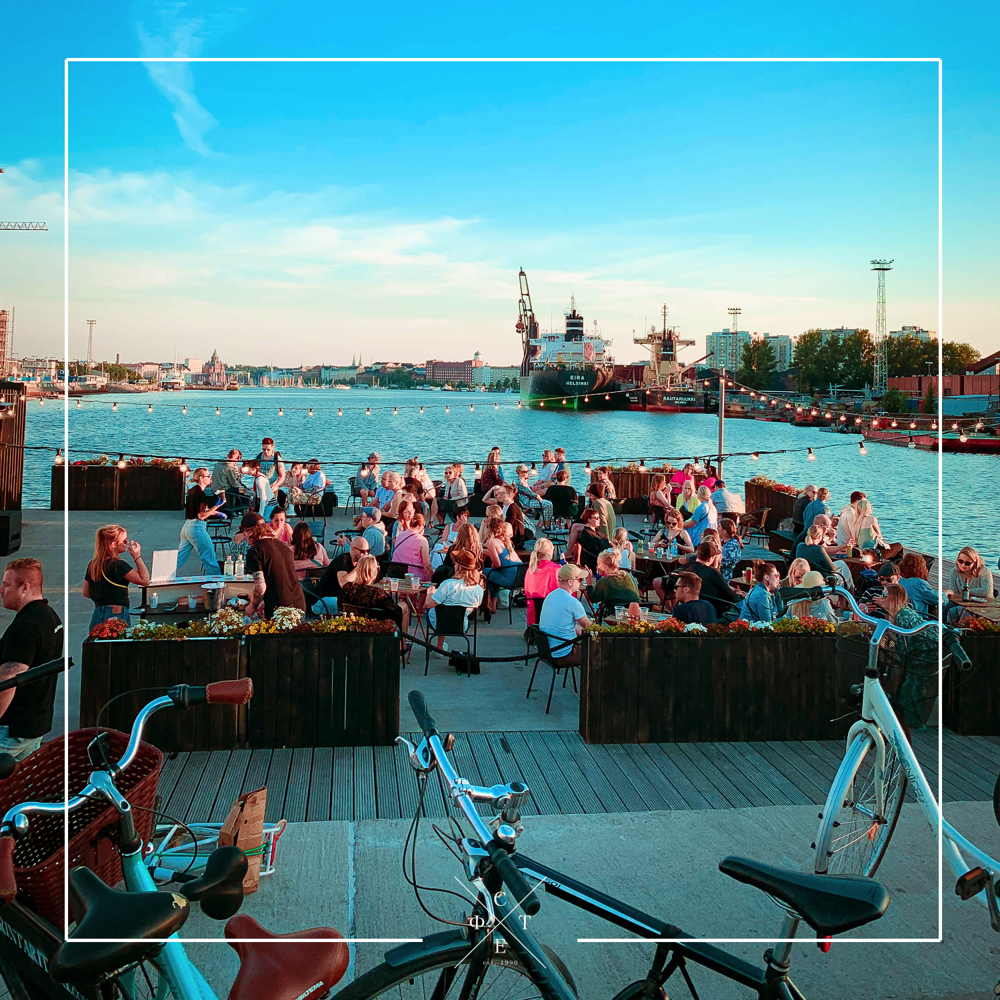
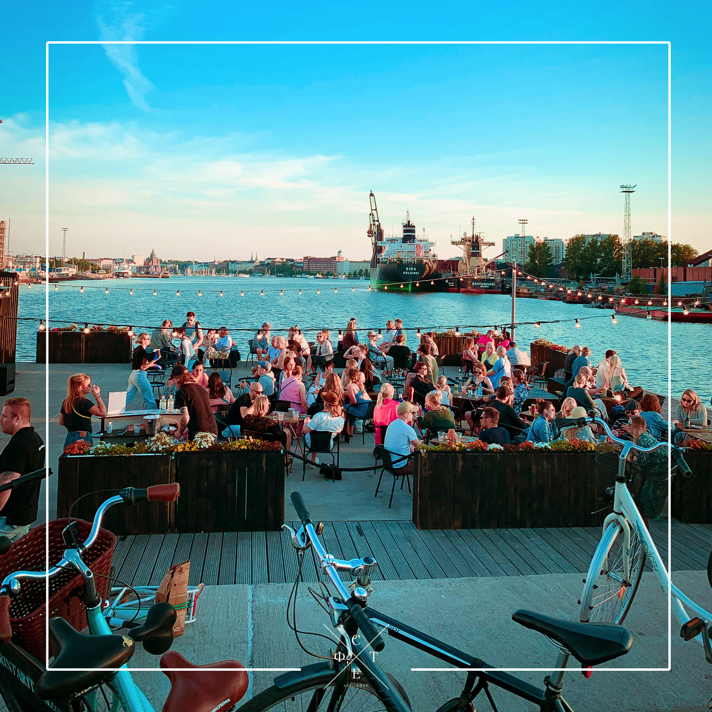

☰
☰
☰
☰


 


My name is Stefan Beatović, Master of Law, I'm 34 years old and at the moment, I live in Dar Es Salaam, Tanzania. I study BIT / ICT in Laurea University of Applied Sciences as a first year student. I have created this website for our Foundations of Web Development study unit, using W3School template and modifying it to my needs.
I was always into photography, wether it was with a phone or propper camera, I was always looking at scenery and where from and what of to take a picture. When I travel, I try to look at almost everything through the lens of a camera. Right now, I am using Sony A6400 with Meike Battery Grip. As a lenses I use Sigma Contemporary 16mm F1.4 DC DN, Sigma Contemporary 28-70mm F2.8 DG DN, Sigma Contemporary 30mm F1.4 DC DN, Sigma Contemporary 56mm F1.4 DC DN and Sigma Contemporary 90mm F2.8 DG DN. I do also use a drone, as you can see from my photos. At the moment I use DJI Mini 3.
E-mail: stefan.beatovic@gmail.com
I have played basketball for almost 20 years in Finland and was also a part of junior basketball national team. I like to stay active and do a lot.
Hakuna Matata!
Did you like my photos? If you did, please leave a comment. If you didn't, you can also comment and tell me how to improve!